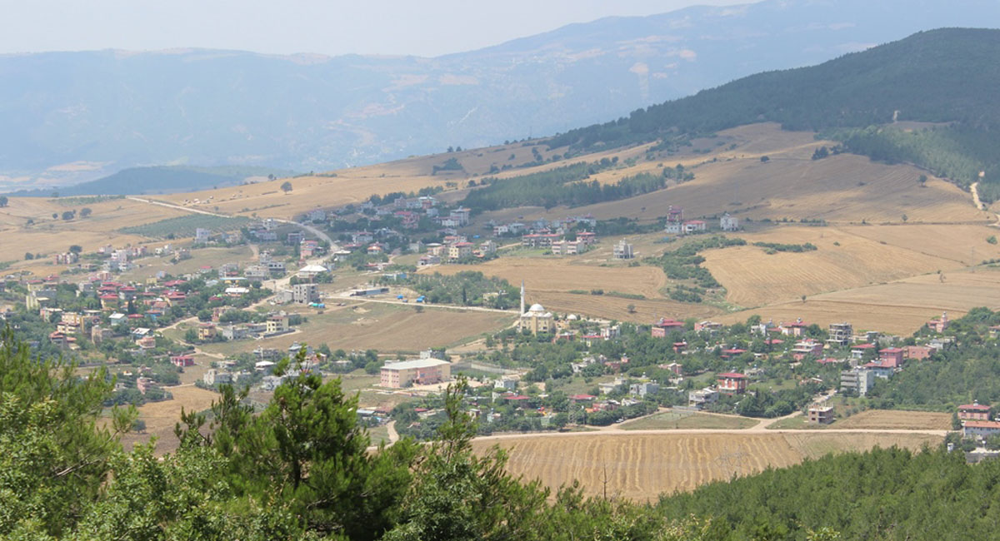

Hasanbeyli

HASANBEYLİ TARİHİ, KÜLTÜREL VE EKONOMİK DURUMU
Hasanbeyli ilçesi ve yörenin tarihi 5 ila 7 bin yıl öncesine dayanır. Bölgede; Sümerler, Elâmlar, Babiller, İyonlar, Mısırlılar, Finikeliler, Romalılar ve Osmanlılar yerleşerek çeşitli uygarlıklar kurmuştur. Türklerin 1071’de Anadolu’ya gelişleriyle birlikte bölge Türk hakimiyetine girmiştir. 4-5 yüzyıl önce yöreye nereden geldiği kesin olarak bilinmeyen Hasan Bey adındaki bir şahsın yöreye yerleşmesiyle Hasanbeyli kurulmuştur. 24.10.1996 gün ve 4200 Sayılı Kanun ile Adana ili Osmaniye ilçesinin il olması ile ilçe statüsü alan Hasanbeyli, bu tarihten itibaren 131.085 dekar Arazi ile Osmaniye İline bağlanmış ve Amanos dağlarının doğu yamaçlarında, 750 rakımlı engebeli ve dağlık bir arazi üzerinde üzerinde kurulu ilçemizin bitki örtüsü fundalık, çam, meşe, demircik ve kesme ağaçlarından (ormanlık alanlardan) oluşmaktadır. İlçemize bağlı 1 Belediye 6 köy ve 4 mahalle olmak üzere 10 idari birim bulunmaktadır. 2018 yılı ADNK Sistemine göre ilçe merkez nüfusu 2.173; köylerin toplam nüfusu 1.2041 ve ilçemizin toplam nüfusu 4.214’dür. İlçemizde 1 Okul Öncesi 2 İlkokul 2 Ortaokul 1 lise olmak üzere 6 Okul 47 derslik 619 öğrenci bulunmaktadır. Derslik başına düşen öğrenci sayısı ise Okul öncesinde 16 İlkokulda 15 Ortaokulda 11 Lisede ise 14 olup Okur yazar oranı %99’ dur.
Devami
İlçede 1 Toplum Sağlığı Merkez Başkanlığı 1 adet Aile sağlığı Merkezi, 1 adet Faal olmayan Sağlık Evi ve 1 adet 112 Acil Yardım İstasyonu bulunmakta olup 3 doktor 1 diş hekimi 1 hemşire 1 ebe 7 diğer personel ile 112 Acil Yardım İstasyonu ise 10 Acil Tıp Teknisyeni ile hizmet vermektedir. İlçenin ekonomik hayatı çok canlı olmayıp ilçede tarım ve hayvancılık önemli gelir kaynaklarıdır. 131 km2 lik yüzölçümünün 38.060 dekar tarıma everişli arazi bulunmakta olup bunların 33.030 dekarı susuz, 5.030 dekarı sulu arazidir. İlçemizde sebze olarak domates, biber, patlıcan, salatalık, lahana, üzüm ve çilek yetiştirilmektedir. Tarım ürünü olarak en çok buğday, mısır, nohut yetiştirilir. Yağlı bitkiler, Kiraz, Hicaz Narı, Bodur Elma, Zeytin, Erik ve Kayısı türleri, İncir, Ceviz yetişmektedir. Bölgede Zorlu Enerji Grubu’na ait Gökçe dağ Rüzgar Enerji Santrali bulunmaktadır. Her biri 2,8 MW gücünde 54 türbinden oluşan Gökçe dağ Rüzgar Enerjisi Santrali’nin kurulu gücü 135 MW’tır. İlçede 17 toplamda 54 rüzgâr gülü vardır. İlçemizin en önemli tarihi yapılarından biri olan Savanda Kalesi, Romalılar tarafından ortaçağda yapılmış yedi burçlu dağ kalesidir. Kalecik Barajı yakınlarında yer almaktadır. Ayrıca doğuya doğru 7 km uzaklıkta bulunan Karafenk Kalesinin, hangi dönemde yapıldığı tam olarak bilinmemektedir. Hasanbeyli Kalesi ise ilçe merkezinde yer almaktadır. İlçemize 4 km uzaklıkta bulunan Almanpınarı Yaylasına asfalt yolla ulaşılabilmektedir. İlçemize ulaşım D–400 karayolu ile sağlanmaktadır. Ayrıca ilçemizin içinden geçen E–24 karayolu ilçenin Fevzipaşa, İslâhiye, Gaziantep ve Kahramanmaraş ile de bağlantısını oluşturmaktadır.
Sayfa Geri Dön